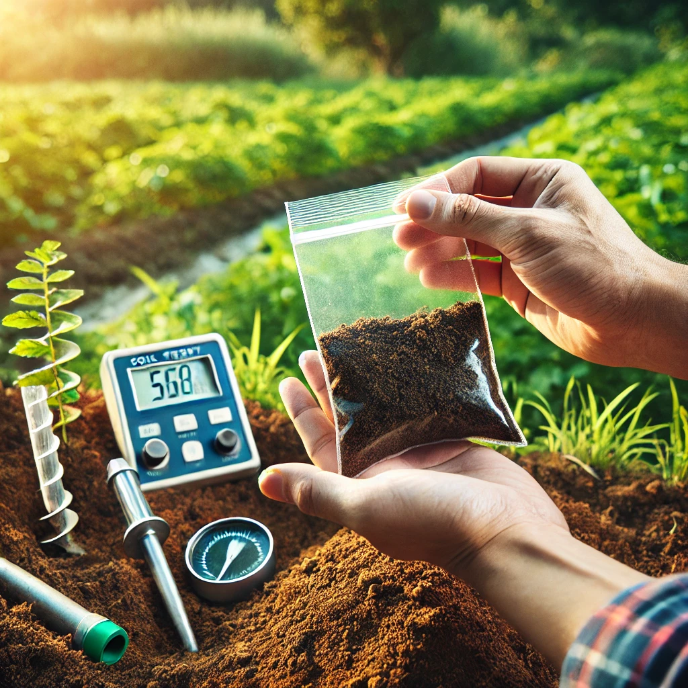
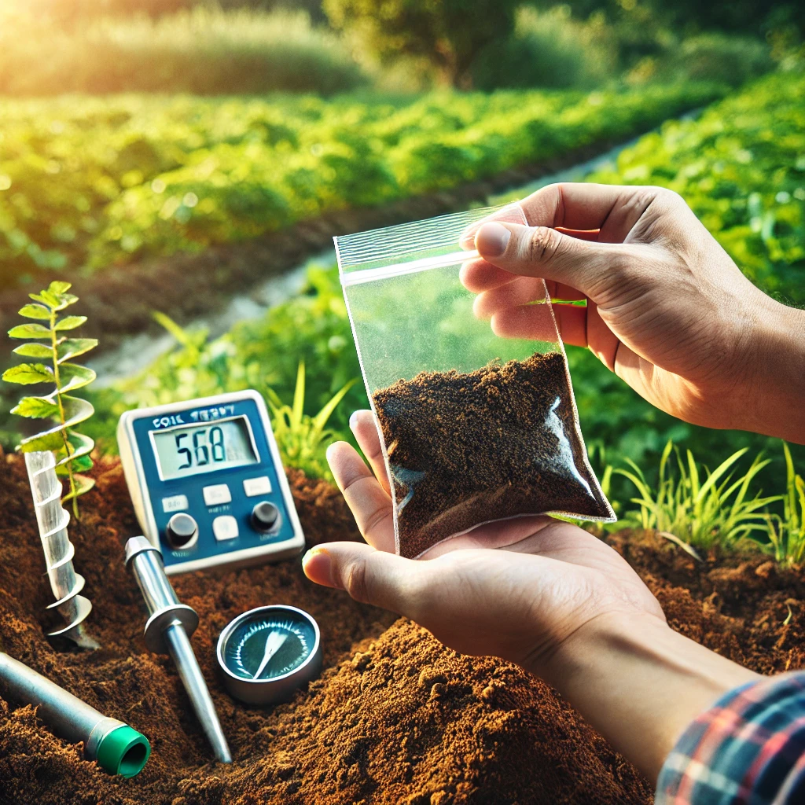

Ethiopia’s Arable land is among the most fertile and underutilized resources globally. Covering various agro-ecological zones, the country's land offers possibilities for growing a wide range of crops. From the highlands of Amhara, rich in cereals like teff and barley, to the lowlands of Gambella, ideal for large-scale rice and maize production, Ethiopia’s agricultural potential is vast.
The Ethiopian government has implemented a strategic approach to facilitate agricultural investment by making significant portions of land available through long-term leases. This approach is supported by infrastructure development, market access facilitation, and incentives for both domestic and international investors.
Additionally, regions such as Oromia and SNNPR offer specific advantages, including access to water resources, favorable climates, and proximity to both domestic and international markets. These factors combine to create a conducive environment for agricultural growth and profitability.
Investment Opportunities by Region
Amhara Region
Primary Products: Teff, Barley, Wheat
The Amhara region's highlands are renowned for their fertile soils, ideal for growing a variety of cereals such as teff, barley, and wheat. The unique microclimate and volcanic soil contribute to the high quality and yield of these crops. Ongoing infrastructure improvements and favorable government policies further enhance the region’s attractiveness for agricultural investment. The region’s fertile soil and favorable climate which support the successful cultivation of cereals. There is significant potential for expanding the production of high-demand crops like teff. Additionally, the government offers various incentives such as tax breaks and subsidies to encourage investment. Amhara’s strategic location near major markets, its rich volcanic soil, and the government support for agricultural development. These factors combined with improvements in infrastructure make it a prime area for investment in the cereal crop sector.
However, investors should be mindful of potential challenges such as climate variability and infrastructure gaps. Investing in irrigation systems and collaborating with local financial institutions can help address these issues and optimize investment returns. Successful examples of investment in Amhara include large-scale teff farms and barley processing facilities, which demonstrate the region’s potential and profitability. These success stories reflect the positive impact of strategic investment in enhancing both local and export markets.
Gambella Region
Primary Products: Rice, Maize
Gambella, known for its vast lowlands and tropical climate, is exceptionally well-suited for large-scale rice and maize production. The region’s fertile soil, abundant water resources from the Baro River, and favorable growing conditions create an ideal environment for high-yield agriculture. These factors not only support extensive cultivation but also position Gambella as a strategic location for accessing export markets, particularly in neighboring South Sudan. The ample arable land and supportive climate present unique investment opportunities in both crop production and infrastructure development.
Investors can capitalize on several key areas in Gambella. Large-scale rice and maize farming can be highly profitable due to the high domestic and regional demand for these staple crops. Investing in irrigation infrastructure is essential to maximize crop yields and ensure consistent production throughout the year. Additionally, establishing agro-processing facilities for rice and maize can add significant value to raw products, reduce post-harvest losses, and create local employment opportunities. The region's proximity to South Sudan also opens up opportunities for cross-border trade, enhancing market access and export potential.
While Gambella presents numerous investment advantages, such as its fertile land, ample water resources, and favorable climate, there are challenges to consider. Infrastructure development, including transportation and logistics, may require attention to improve market accessibility. Additionally, managing climate risks, such as flooding, through advanced irrigation systems and flood management strategies is crucial. Successful examples in Gambella, such as large-scale rice farms, advanced irrigation projects, and agro-processing ventures, illustrate the region’s potential and profitability, demonstrating that with the right investments, Gambella can become a key player in Ethiopia’s agricultural sector.
Oromia Region
Primary Products: Coffee, Horticulture (Fruits, Vegetables, Ornamentals)
Oromia is a prime agricultural region in Ethiopia, celebrated for its high-quality coffee and diverse horticultural products. The region's varied climate—from highland areas with cooler temperatures to lower altitudes with warmer conditions—supports the year-round cultivation of a wide range of crops, including fruits, vegetables, and ornamental plants. The favorable growing conditions contribute to the production of some of the finest coffee beans and vibrant horticultural products, making Oromia a key player in both domestic and international markets.
Investment opportunities in Oromia are substantial. The region's coffee sector is a major economic driver, with a robust export market that demands high-quality beans. Investing in coffee production, processing, and value addition can yield significant returns. Additionally, Oromia's horticultural sector offers potential for investments in growing, processing, and exporting fruits, vegetables, and flowers. Advanced agricultural practices and facilities can enhance product quality and meet the growing demand both locally and internationally. Government incentives and local expertise further support these investment opportunities, providing a conducive environment for growth.
While Oromia offers numerous advantages, investors should also be aware of potential challenges. Climate variability can impact crop yields, necessitating investments in irrigation systems and climate-resilient agricultural practices. Infrastructure improvements in transportation and logistics are essential to facilitate market access and reduce post-harvest losses. Success stories in Oromia, such as the expansion of coffee plantations and the development of sophisticated horticultural farms, underscore the region’s potential and the effectiveness of strategic investments. By addressing these challenges and leveraging local strengths, Oromia can continue to thrive as a leading agricultural hub.
SNNPR Region
Primary Products: Fruits, Vegetables, Flowers
The Southern Nations, Nationalities, and People's Region (SNNPR) is renowned for its exceptional horticultural production. This region benefits from a temperate climate and abundant water resources, which are ideal for growing a diverse array of fruits, vegetables, and ornamental flowers. The fertile soil and favorable weather conditions ensure high-quality produce year-round, making SNNPR a prime location for agricultural investment. The region's diverse agro-ecological zones support a wide variety of crops, contributing to its strong horticultural industry.
Investors in SNNPR can explore several promising areas. The production of high-value fruits and vegetables can be particularly lucrative, given the region's optimal growing conditions and strong local demand. Investing in advanced horticultural techniques and facilities can enhance yield and product quality, positioning SNNPR as a key supplier in both domestic and international markets. Additionally, the cultivation of ornamental flowers for export markets presents a significant opportunity, leveraging the region’s favorable climate and growing conditions.
Despite its advantages, SNNPR also faces challenges that investors should consider. Infrastructure, particularly in rural areas, may require development to support efficient transportation and distribution of agricultural products. Addressing these infrastructure needs can improve market access and reduce post-harvest losses. Success stories in the region include thriving fruit and vegetable farms and successful flower export ventures, demonstrating the potential for profitable investments. By leveraging the region’s strengths and addressing infrastructure challenges, SNNPR can continue to excel as a leading horticultural hub.
Somali Region
Primary Products: Livestock Farming, Pastoralism
The Somali Region stands out as a prime area for livestock farming due to its vast pastoral lands and traditional practices in pastoralism. The region’s extensive rangelands are well-suited for raising various livestock, including cattle, goats, and camels. These pastoral lands provide a natural and extensive grazing area that supports the health and productivity of livestock. The region’s long-standing tradition in pastoralism has cultivated a skilled workforce experienced in managing livestock, contributing to the sector’s overall efficiency and productivity.
Investment opportunities in the Somali Region are substantial. The region’s proximity to Middle Eastern markets offers significant export potential for livestock and livestock products, such as meat and dairy. Investors can focus on expanding livestock farming operations, improving breeding practices, and establishing facilities for processing and exporting animal products. Additionally, investments in veterinary services and livestock health management can enhance productivity and profitability. The established pastoral tradition and market access make the Somali Region a strategic location for livestock-related ventures.
Challenges in the Somali Region include managing the impact of climatic conditions on grazing lands and ensuring sustainable livestock management practices. Addressing these challenges requires investments in sustainable land management and veterinary infrastructure to support livestock health and productivity. Success stories in the region, such as large-scale camel farms and meat export ventures, highlight the potential for profitable investments. By leveraging its traditional expertise and strategic market access, the Somali Region can enhance its role as a leading hub for livestock farming in the region.
Tigray Region
Primary Products: Oilseeds, Pulses
The Tigray Region, with its semi-arid climate and fertile soil, is highly suitable for the cultivation of oilseeds and pulses. The region's unique climatic conditions contribute to the production of high-value crops like sesame, soybean, and lentils, which are in strong demand both domestically and internationally. Tigray's soil is well-suited for these crops, providing a conducive environment for their growth and yield. The combination of favorable growing conditions and high market demand makes Tigray an attractive destination for investors in the oilseeds and pulses sectors.
Investment opportunities in Tigray are robust, particularly in the areas of oilseed and pulse production. The region offers potential for expanding cultivation, improving farming practices, and enhancing the quality of these crops. Investment in processing facilities can add significant value to raw products, facilitating both domestic consumption and export. Additionally, Tigray's developed infrastructure supports efficient processing and exporting, which enhances its appeal to investors. By leveraging the region's natural advantages and existing infrastructure, investors can tap into lucrative markets for oilseeds and pulses.
Despite its advantages, Tigray faces challenges such as water scarcity and the need for sustainable farming practices. Addressing these issues through investments in irrigation systems and efficient water management can improve crop yields and sustainability. Furthermore, enhancing infrastructure for transportation and storage can reduce post-harvest losses and boost market access. Successful investments in the region, including advanced processing facilities and expanded cultivation areas, demonstrate Tigray's potential for growth. By overcoming these challenges and leveraging its strengths, Tigray can solidify its position as a leading producer of oilseeds and pulses.
Investment Sectors
Crop Investment Information System
Primary Products: Wheat, Sorghum, Barley, Tef, Maize, Rice, Potatoes
Ethiopia's diverse agro-ecological zones create a fertile ground for a wide variety of crop investments. The country supports the cultivation of numerous staple crops, including teff, maize, wheat, sorghum, barley, rice, and potatoes. Each of these crops has significant importance both for local consumption and for export markets. The varied climates and soil types across Ethiopia allow for the growth of different crops in different regions, enhancing the investment potential in crop production.
Investment in Ethiopia's crop production is supported by various government programs designed to improve agricultural productivity. These programs offer research and development support, subsidies for inputs such as seeds and fertilizers, and infrastructure improvements like irrigation systems and storage facilities. Additionally, the government provides market access support to help farmers and investors reach both domestic and international markets. This supportive framework aims to boost crop yields and enhance the overall efficiency of the agricultural sector.
To maximize investment potential, investors should consider focusing on high-demand crops such as teff and maize, which are crucial to both the local diet and export markets. Investment opportunities include expanding cultivation areas, improving crop management practices, and establishing processing facilities to add value to raw products. By leveraging Ethiopia's supportive government programs and diverse growing conditions, investors can enhance their returns and contribute to the country's agricultural growth.
Livestock Farming Investment Information System
Primary Products: Dairy Farming, Meat Production, Poultry Farming, Aquaculture
The livestock sector in Ethiopia is a cornerstone of the economy, encompassing various sub-sectors including dairy farming, meat production, poultry farming, and aquaculture. Dairy farming holds significant potential due to the country's tradition of livestock rearing and the increasing demand for milk and dairy products both locally and abroad. Ethiopia's diverse climates support the rearing of various livestock breeds, making it suitable for producing high-quality dairy products.
Meat production, encompassing beef, poultry, and mutton, is another critical area with substantial growth potential. The country’s vast grazing lands and favorable conditions for livestock growth contribute to a strong base for meat production. There is a growing demand for meat in domestic markets and opportunities for exporting to international markets, particularly in the Middle East. Investments in modernizing slaughterhouses and processing facilities can further enhance this sector's efficiency and profitability.
Poultry farming is also a burgeoning industry in Ethiopia, driven by the increasing consumption of chicken and eggs. Investments in poultry farming can benefit from advancements in breeding, feeding, and disease management to improve productivity and meet rising consumer demands. Additionally, aquaculture represents an emerging investment opportunity, with the potential for fish farming to diversify the livestock sector. The availability of water resources and innovations in fish farming techniques make aquaculture a viable option for expanding investment portfolios in Ethiopia.
Agroforestry Investment Information System
Primary Products: Timber, Non-Timber Forest Products (Rubber, Resins, Medicinal Plants)
Agroforestry is a land management system that combines agricultural crops with forest vegetation, offering a range of sustainable and high-value products. The integration of trees and shrubs into farming systems not only enhances biodiversity but also improves soil health and water retention. Key products in this sector include timber and non-timber forest products such as rubber, resins, and medicinal plants.
The production of timber is a major aspect of agroforestry, providing a renewable resource that can be sustainably managed. Timber from agroforestry systems is used for construction, furniture, and fuel, contributing to both local economies and global markets. Investing in sustainable timber production helps preserve forest ecosystems while generating long-term revenue. Additionally, the cultivation of non-timber forest products such as rubber, resins, and medicinal plants opens up diverse revenue streams. These products have high market value and contribute to the conservation of forest resources.
Investment in agroforestry supports environmental sustainability and offers several benefits:
- Environmental Benefits: Agroforestry practices improve soil fertility, reduce erosion, and enhance biodiversity.
- Economic Diversification: Offers multiple revenue streams from timber and non-timber products, reducing financial risk.
- Sustainable Management: Promotes the responsible use of natural resources while ensuring long-term productivity and ecological balance.
To maximize investment in agroforestry, focus on developing sustainable management practices, enhancing product quality, and exploring new markets for forest products. Investing in research and technology for improved agroforestry practices can further boost productivity and profitability.
Agro Processing Investment Management System
Primary Products: Food Processing, Textile Industry, Biofuels
Agro-processing involves transforming raw agricultural products into processed goods, enhancing their value and marketability. This sector is crucial for adding economic value to basic crops and raw materials. Key areas of investment include food processing, which encompasses the production of canned foods, juices, and snacks; the textile industry, focusing on fibers such as cotton and wool; and the production of biofuels, including ethanol and biodiesel. Each of these areas offers substantial opportunities for increasing export potential and generating local employment.
Investment in food processing not only helps in managing surplus agricultural produce but also in creating value-added products for both domestic and international markets. The sector includes a wide range of products, from packaged foods to beverages, each with growing consumer demand. Investing in processing facilities can significantly boost profitability by turning raw materials into high-value products that command better prices in the market.
The textile industry offers opportunities for processing natural fibers into clothing and other textile products. Ethiopia’s strong agricultural base in cotton and other fibers provides a solid foundation for this industry. Additionally, the biofuels sector presents an innovative approach to sustainable energy production. With the growing global focus on renewable energy, biofuels derived from agricultural products can meet increasing energy demands while promoting environmental sustainability.
By investing in agro-processing, stakeholders can achieve several benefits, including:
- Enhanced Value Addition: Transforming raw materials into high-value products increases profitability.
- Job Creation: Establishing processing facilities creates employment opportunities and supports local economies.
- Export Potential: Processed goods often have higher market demand internationally, boosting export revenues.
Focusing on advanced processing technologies and market expansion strategies can further amplify the benefits of agro-processing investments. Emphasizing quality control, efficient production methods, and exploring new market opportunities will enhance the sector’s growth and success.
Agri Service Investment Information Management System
Primary Products: Agricultural Financing, Extension Services, Supply Chain Management
Investments in agricultural services are vital for enhancing the efficiency and effectiveness of Ethiopia's agricultural sector. Agricultural financing is crucial for providing farmers with the necessary capital to invest in seeds, equipment, and other inputs. Access to credit and loans enables farmers to scale up operations, adopt modern technologies, and improve productivity. Financial support programs can also include insurance schemes to mitigate risks associated with agricultural production.
Extension services play a key role in bridging the gap between research and practical farming. By investing in training and advisory services, farmers gain access to the latest agricultural techniques, pest management strategies, and crop improvement practices. These services enhance agricultural productivity, promote sustainable farming practices, and ensure that farmers are equipped with the knowledge needed to succeed in a competitive market.
Supply chain management involves optimizing the logistics, storage, and distribution of agricultural products. Effective supply chain systems reduce post-harvest losses, ensure timely delivery to markets, and improve overall efficiency. Investments in infrastructure such as storage facilities, transportation networks, and cold chain logistics are essential for maintaining product quality and meeting market demands. By enhancing supply chain management, investors can improve market access and profitability for farmers and producers.
Key benefits of investing in agricultural services include:
- Increased Productivity: Access to financing and extension services boosts farm productivity and efficiency.
- Enhanced Market Access: Improved supply chain management ensures better access to domestic and international markets.
- Risk Mitigation: Financial support and insurance help manage risks and uncertainties in agricultural production.
To maximize the impact of investments in agricultural services, focus on creating comprehensive support systems that integrate financing, training, and supply chain improvements. Collaborating with local stakeholders and leveraging technology can further enhance the effectiveness and reach of these services.
Organic Farming Investment Information Management System
Primary Products: Organic Crops, Organic Livestock Farming
Organic farming focuses on producing food and livestock using methods that maintain ecological balance and promote sustainability. Organic crops are cultivated without synthetic pesticides, fertilizers, or genetically modified organisms (GMOs), ensuring that the produce is free from harmful chemicals. This approach not only meets growing consumer preferences for healthier, chemical-free food but also supports environmental conservation by enhancing soil health and biodiversity.
Organic livestock farming involves raising animals with organic feed, without the use of growth hormones or antibiotics. This method aligns with the principles of animal welfare and provides high-quality, hormone-free meat, dairy, and eggs. Investments in organic livestock can cater to the expanding market for organic animal products, which are perceived as more nutritious and ethically produced. Organic certification processes, while rigorous, offer valuable market differentiation and can command premium prices.
The benefits of investing in organic farming include:
- Premium Pricing: Organic products often sell at higher prices due to their perceived health benefits and environmental friendliness.
- Market Growth: Rising consumer demand for organic produce drives market expansion and offers new business opportunities.
- Sustainability: Organic farming practices contribute to long-term environmental sustainability by improving soil health and reducing chemical runoff.
Investing in organic farming requires attention to certification standards, market trends, and consumer preferences. Developing robust marketing strategies and leveraging organic certification can enhance market access and profitability. By adopting sustainable practices and focusing on high-quality organic products, investors can capitalize on the growing demand for organic agriculture.
Animal Feed Production Investment Information Management System
Primary Products: Feed Mills, Nutritional Supplements
Investing in animal feed production is a cornerstone of successful livestock farming. High-quality animal feeds are essential for maintaining the health and productivity of livestock. Feed mills produce a variety of feed formulations tailored to different types of animals, including poultry, cattle, and aquaculture species. These facilities play a crucial role in ensuring that animals receive balanced and nutritious diets, which directly impacts their growth rates, reproductive performance, and overall health.
Nutritional supplements are another key area within the animal feed sector. These supplements enhance the nutritional value of the feed and address specific dietary deficiencies. Investing in nutritional supplements not only supports better animal health but also contributes to improved productivity and profitability for livestock operations. The demand for these supplements is growing as livestock producers seek ways to optimize animal performance and reduce disease prevalence.
The benefits of investing in animal feed production include:
- Essential Industry: High-quality feed production is critical for the success and growth of livestock farming, making it a vital sector for investment.
- Increasing Demand: With the expansion of the livestock sector, the need for animal feeds and nutritional supplements is expected to rise significantly, presenting lucrative investment opportunities.
- Technological Advancements: There are opportunities to invest in advanced feed production technologies that enhance feed quality and livestock productivity, driving innovation and efficiency in the sector.
By investing in animal feed production, you support the backbone of the livestock industry and capitalize on growing demand and technological advancements. Focusing on high-quality production and innovative solutions can enhance both profitability and sustainability in this critical sector.